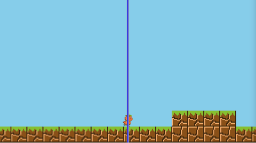

はじめに
横スクロールアクションゲームでは、画面のスクロール処理が欠かせませんが、スクロール１つでも結構奥が深いです。今回はphina.jsで主だったスクロール処理を実装してみました。
プレイヤー固定スクロール
まずは以下のサンプルを確認してみて下さい。 プレイヤーの位置は画面の中心固定で画面がスクロールします。画面タッチでプレイヤーがジャンプして、障害物に当たると反転移動します。 中心には分かりやすいようにラインを表示しています。
このパターンのスクロールは、特に難しい実装はないかと思います。 プレイヤーは動かさずに固定して、プレイヤー以外のオブジェクトをプレイヤーの移動方向と逆向きに動かすことで、プレイヤーが移動しているように見えます。
// 画面スクロール
moveX: function() {
var self = this;
this.objectGroup.children.each(function(obj) {
obj.x += -self.player.vx;
});
},
変則スクロール
始めは固定スクロールと同じようにスクロールしますが、ステージの端に行くとスクロールが止まります。 そして、画面中央を超えると再びスクロールします。
このパターンのスクロールのポイントは、プレイヤー以外のオブジェクトの移動とプレイヤーのみの移動の切り替えです。 プレイヤーの横方向の状態をチェックする関数を用意して、その中で切り替えを行います。
// 横方向の状態チェック
checkHorizontalState: function() {
var player = this.player;
var state = this.player.horizontalState;
// 左端のオブジェクト
var first = this.objectGroup.children.first;
// 右端のオブジェクト
var last = this.objectGroup.children.last;
// プレイヤーの状態で分ける
switch (state) {
// 左移動中
case 'MOVING_LEFT':
// ヒットしたら反転
if (this.collisionX()) {
player.reflectX();
player.horizontalState = 'MOVING_RIGHT';
}
else {
// 左端のオブジェクトが見えたらプレイヤーのみ動かす
if (first.x > 0) {
player.horizontalState = 'MOVING_LEFT_SELF';
}
else {
this.moveX();
}
}
break;
-横方向の状態で、MOVING_LEFTはプレイヤーを固定して背景を動かす場合、MOVING_LEFT_SELFは背景を固定してプレイヤーを動かす場合としました。
- this.objectGroup.children.firstで一番最初（左端）のオブジェクトが参照できますので、それをfirstという変数に代入して位置の比較を行い、画面左端に現れたらプレイヤーのみの移動に切り替えています。
// 左移動中（プレイヤーのみ）
case 'MOVING_LEFT_SELF':
if (this.collisionX()) {
player.reflectX();
player.horizontalState = 'MOVING_RIGHT_SELF';
}
else {
// 右端のオブジェクトが画面から消えてプレイヤーが中央を超えたら
if (last.x < SCREEN_WIDTH && player.x < this.gx.center()) {
player.x = this.gx.center();
// 通常スクロールへ
player.horizontalState = 'MOVING_LEFT';
}
else {
player.moveX();
}
}
break;
- 左向きのプレイヤーのみの移動からスクロールへの切り替えは、右端のオブジェクトが画面から見えなくなって、かつプレイヤーが画面中央を超えた時で判定しています。
- これらの判定を右方向の移動に対しては、逆に行えば良いということになります。
スライドスクロール
初期のゼルダの伝説に代表されるように、プレイヤーが画面の端に到達すると画面がスライドしてスクロールするタイプです。
このパターンのスクロールは、基本プレイヤーのみを動かしますが、画面をスライドする時には背景オブジェクトとプレイヤーをまとめて動かす必要があります。
// 右移動中
case 'MOVING_RIGHT':
if (this.collisionX()) {
player.reflectX();
player.horizontalState = 'MOVING_LEFT';
}
else {
if (player.x > SCREEN_WIDTH) {
player.horizontalState = 'STOP';
player.verticalState = 'STOP';
player.vy = 0;
this.scrollX();
}
else {
player.moveX();
}
}
break;
// 停止中
case 'STOP':
break;
- プレイヤーが画面端に達したらプレイヤーの動きを止めて、STOPという新しい状態に遷移させます。
- STOPでは、その名の通り何も処理も行いません。
- 新たに作ったscrollXという関数を呼んで画面をスライドさせます。
// 画面スクロール
scrollX: function() {
var player = this.player;
var flows = [];
// スクロール方向を決める
var dir = player.vx > 0 ? -1 : 1;
// 背景オブジェクトの移動
this.objectGroup.children.each(function(obj) {
var flow = Flow(function(resolve) {
obj.tweener.by({x: dir * SCREEN_WIDTH}, 1000)
.call(function() {
resolve();
}).play();
});
// flow配列に追加
flows.push(flow);
});
// プレイヤー
var flow = Flow(function(resolve) {
player.tweener.by({x: dir * SCREEN_WIDTH}, 1000)
.call(function() {
resolve();
}).play();
});
flows.push(flow);
// 非同期処理
Flow.all(flows).then(function() {
// プレイヤー移動再開
player.horizontalState = player.vx > 0 ? 'MOVING_RIGHT': 'MOVING_LEFT';
player.verticalState = 'FALLING';
});
},
- スライドスクロールは、tweenerと非同期処理を行うFlowで実装しています。
- プレイヤーの移動方向とは逆に、オブジェクトとプレイヤーを１画面分まとめて動かしています。
- Flowはオブジェクトとプレイヤーの分を作成して配列に追加して、Flow.allで全ての移動終了を検知した後に、プレイヤーを動かす状態に遷移させています。
- Flowについては、以下を参考にして下さい。